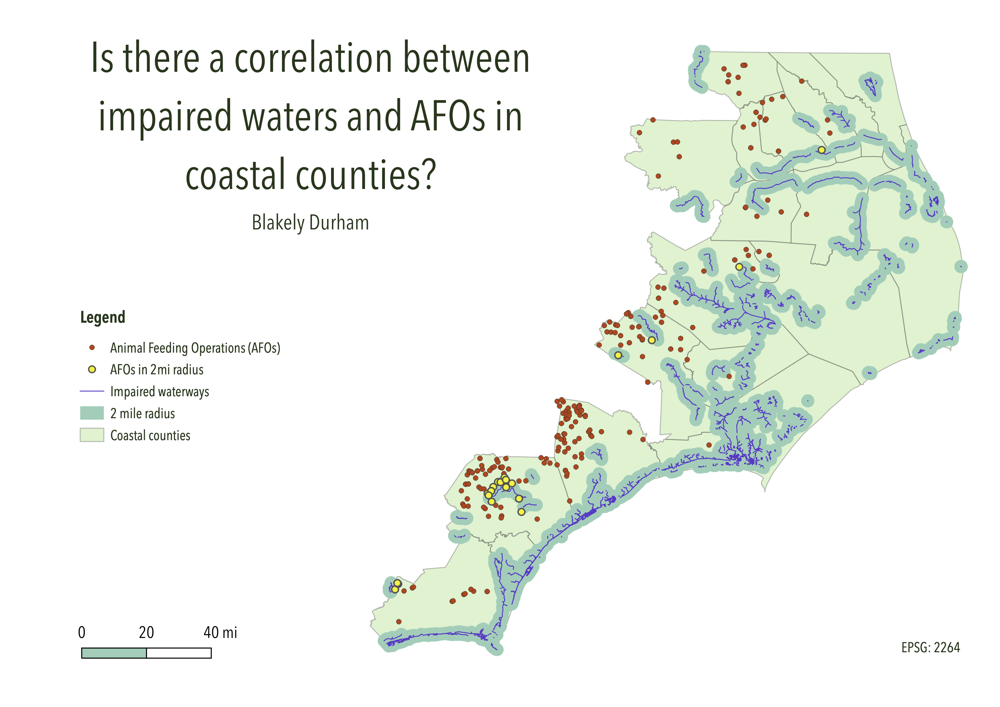

Homework 8: Geoprocessing Analysis

This map is intended to answer the question “Is there a correlation between impaired waters and AFOs in coastal counties?” I first used intersection to limit the AFOs and impaired waters data to only the coastal counties. Next, I generated a 2 mile buffer around the impaired waters. I then intersected the AFOs and the 2 mile buffer to see the number of AFOs near impaired waters. Out of 235 AFOs, 72 are within a 2 mile radius of an impaired waterway.
Data used for this project
NC Counties
NC Impaired Waters
NC Permitted Animal Feeding Operations
Coastal Counties
Coastal AFOs
Coastal Impaired Waterways
2 mile radius
AFOs in 2 mile radius